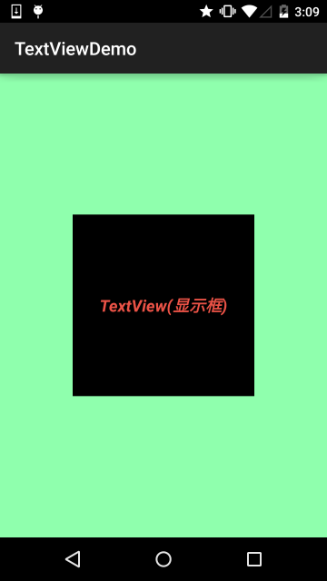
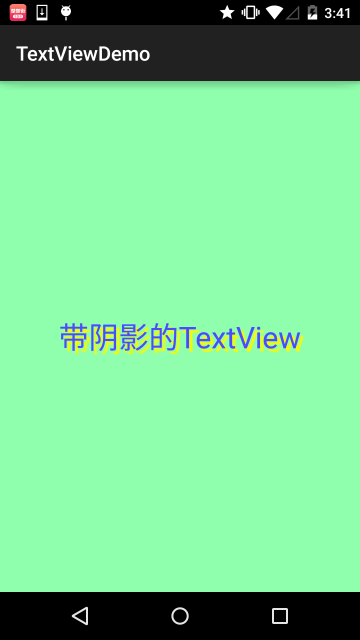
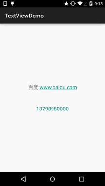
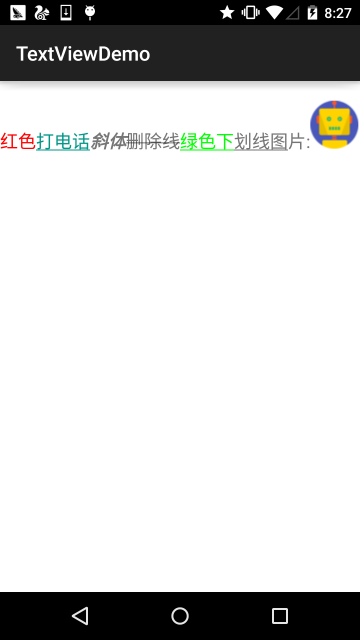
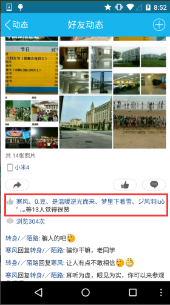
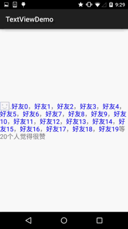
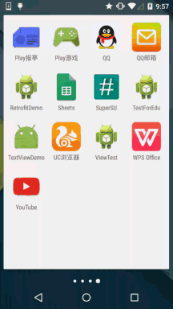

本节引言：
学习完Android中的六大布局，从本节开始我们来一个个讲解Android中的UI控件，本节给大家带来的UI控件是：TextView(文本框)，用于显示文本的一个控件，另外声明一点，我不是翻译API文档，不会一个个属性的去扣，只学实际开发中常用的，有用的，大家遇到感觉到陌生的属性可以查询对应的API！当然，每一节开始都会贴这一节对应API文档的链接：TextView API 好了，在开始本节内容前，先要介绍下几个单位：
dp(dip): device independent pixels(设备独立像素). 不同设备有不同的显示效果,这个和设备硬件有关，一般我们为了支持WVGA、HVGA和QVGA 推荐使用这个，不依赖像素。 px: pixels(像素). 不同设备显示效果相同，一般我们HVGA代表320x480像素，这个用的比较多。 pt: point，是一个标准的长度单位，1pt＝1/72英寸，用于印刷业，非常简单易用； sp: scaled pixels(放大像素). 主要用于字体显示best for textsize。
1.基础属性详解：
通过下面这个简单的界面，我们来了解几个最基本的属性：

布局代码：
<RelativeLayout xmlns:android="http://schemas.android.com/apk/res/android"
xmlns:tools="http://schemas.android.com/tools"
android:layout_width="match_parent"
android:layout_height="match_parent"
tools:context=".MainActivity"
android:gravity="center"
android:background="#8fffad">
<TextView
android:id="@+id/txtOne"
android:layout_width="200dp"
android:layout_height="200dp"
android:gravity="center"
android:text="TextView(显示框)"
android:textColor="#EA5246"
android:textStyle="bold|italic"
android:background="#000000"
android:textSize="18sp" />
</RelativeLayout>
上面的TextView中有下述几个属性:
- id：为TextView设置一个组件id，根据id，我们可以在Java代码中通过findViewById()的方法获取到该对象，然后进行相关属性的设置，又或者使用RelativeLayout时，参考组件用的也是id！
- layout_width：组件的宽度，一般写：**wrap_content**或者**match_parent(fill_parent)**，前者是控件显示的内容多大，控件就多大，而后者会填满该控件所在的父容器；当然也可以设置成特定的大小，比如我这里为了显示效果，设置成了200dp。
- layout_height：组件的高度，内容同上。
- gravity：设置控件中内容的对齐方向，TextView中是文字，ImageView中是图片等等。
- text：设置显示的文本内容，一般我们是把字符串写到string.xml文件中，然后通过@String/xxx取得对应的字符串内容的，这里为了方便我直接就写到""里，不建议这样写！！！
- textColor：设置字体颜色，同上，通过colors.xml资源来引用，别直接这样写！
- textStyle：设置字体风格，三个可选值：**normal**(无效果)，**bold**(加粗)，**italic**(斜体)
- textSize：字体大小，单位一般是用sp！
- background：控件的背景颜色，可以理解为填充整个控件的颜色，可以是图片哦！
2.实际开发例子
2.1 带阴影的TextView
涉及到的几个属性：
- android:shadowColor:设置阴影颜色,需要与shadowRadius一起使用哦!
- android:shadowRadius:设置阴影的模糊程度,设为0.1就变成字体颜色了,建议使用3.0
- android:shadowDx:设置阴影在水平方向的偏移,就是水平方向阴影开始的横坐标位置
- android:shadowDy:设置阴影在竖直方向的偏移,就是竖直方向阴影开始的纵坐标位置
效果图：

实现代码：
<TextView
android:layout_width="wrap_content"
android:layout_height="wrap_content"
android:layout_centerInParent="true"
android:shadowColor="#F9F900"
android:shadowDx="10.0"
android:shadowDy="10.0"
android:shadowRadius="3.0"
android:text="带阴影的TextView"
android:textColor="#4A4AFF"
android:textSize="30sp" />
2.2 带边框的TextView：
如果你想为TextView设置一个边框背景，普通矩形边框或者圆角边框！下面可能帮到你！ 另外TextView是很多其他控件的父类，比如Button，也可以设置这样的边框！ 实现原理很简单，自行编写一个ShapeDrawable的资源文件！然后TextView将blackgroung 设置为这个drawable资源即可！
简单说下shapeDrawable资源文件的几个节点以及属性：
- <solid android:color = "xxx"> 这个是设置背景颜色的
- <stroke android:width = "xdp" android:color="xxx"> 这个是设置边框的粗细,以及边框颜色的
- <padding androidLbottom = "xdp"...> 这个是设置边距的
- <corners android:topLeftRadius="10px"...> 这个是设置圆角的
- <gradient> 这个是设置渐变色的,可选属性有: startColor:起始颜色 endColor:结束颜色 centerColor:中间颜色 angle:方向角度,等于0时,从左到右,然后逆时针方向转,当angle = 90度时从下往上 type:设置渐变的类型
实现效果图：

代码实现：
Step 1:编写矩形边框的Drawable：
<?xml version="1.0" encoding="utf-8"?>
<shape xmlns:android="http://schemas.android.com/apk/res/android" >
<!-- 设置一个黑色边框 -->
<stroke android:width="2px" android:color="#000000"/>
<!-- 渐变 -->
<gradient
android:angle="270"
android:endColor="#C0C0C0"
android:startColor="#FCD209" />
<!-- 设置一下边距,让空间大一点 -->
<padding
android:left="5dp"
android:top="5dp"
android:right="5dp"
android:bottom="5dp"/>
</shape>
Step 2:编写圆角矩形边框的Drawable：
<?xml version="1.0" encoding="utf-8"?>
<shape xmlns:android="http://schemas.android.com/apk/res/android">
<!-- 设置透明背景色 -->
<solid android:color="#87CEEB" />
<!-- 设置一个黑色边框 -->
<stroke
android:width="2px"
android:color="#000000" />
<!-- 设置四个圆角的半径 -->
<corners
android:bottomLeftRadius="10px"
android:bottomRightRadius="10px"
android:topLeftRadius="10px"
android:topRightRadius="10px" />
<!-- 设置一下边距,让空间大一点 -->
<padding
android:bottom="5dp"
android:left="5dp"
android:right="5dp"
android:top="5dp" />
</shape>
Step 3:将TextView的blackground属性设置成上面这两个Drawable：
<LinearLayout xmlns:android="http://schemas.android.com/apk/res/android"
xmlns:tools="http://schemas.android.com/tools"
android:layout_width="match_parent"
android:layout_height="match_parent"
android:background="#FFFFFF"
android:gravity="center"
android:orientation="vertical"
tools:context=".MainActivity">
<TextView
android:id="@+id/txtOne"
android:layout_width="200dp"
android:layout_height="64dp"
android:textSize="18sp"
android:gravity="center"
android:background="@drawable/txt_rectborder"
android:text="矩形边框的TextView" />
<TextView
android:id="@+id/txtTwo"
android:layout_width="200dp"
android:layout_height="64dp"
android:layout_marginTop="10dp"
android:textSize="18sp"
android:gravity="center"
android:background="@drawable/txt_radiuborder"
android:text="圆角边框的TextView" />
</LinearLayout>
2.3 带图片(drawableXxx)的TextView：
在实际开发中，我们可能会遇到这种需求：

如图，要实现这种效果，可能你的想法是：一个ImageView用于显示图片 + 一个TextView用于显示文字，然后把他们丢到一个LinearLayout中，接着依次创建四个这样的小布局，再另外放到一个大的LinearLayout中，效果是可以实现，但是会不会有点繁琐呢？而且前面我们前面也说过，布局层次越少，性能越好！使用drawableXxx就可以省掉上面的过程，直接设置四个TextView就可以完成我们的需求！
基本用法：
设置图片的核心其实就是:drawableXxx;可以设置四个方向的图片: drawableTop(上),drawableButtom(下),drawableLeft(左),drawableRight(右) 另外,你也可以使用drawablePadding来设置图片与文字间的间距！
效果图：(设置四个方向上的图片)

实现代码：
<RelativeLayout xmlns:android="http://schemas.android.com/apk/res/android"
xmlns:tools="http://schemas.android.com/tools"
android:layout_width="match_parent"
android:layout_height="match_parent"
tools:context="com.jay.example.test.MainActivity" >
<TextView
android:layout_width="wrap_content"
android:layout_height="wrap_content"
android:layout_centerInParent="true"
android:drawableTop="@drawable/show1"
android:drawableLeft="@drawable/show1"
android:drawableRight="@drawable/show1"
android:drawableBottom="@drawable/show1"
android:drawablePadding="10dp"
android:text="张全蛋" />
</RelativeLayout>
一些问题： 可能你会发现，我们这样设置的drawable并不能自行设置大小，在XML是无法直接设置的； 所以我们需要在Java代码中来进行一个修改！
示例代码如下：
package com.jay.example.test;
import android.app.Activity;
import android.graphics.drawable.Drawable;
import android.os.Bundle;
import android.widget.TextView;
public class MainActivity extends Activity {
private TextView txtZQD;
@Override
protected void onCreate(Bundle savedInstanceState) {
super.onCreate(savedInstanceState);
setContentView(R.layout.activity_main);
txtZQD = (TextView) findViewById(R.id.txtZQD);
Drawable[] drawable = txtZQD.getCompoundDrawables();
// 数组下表0~3,依次是:左上右下
drawable[1].setBounds(100, 0, 200, 200);
txtZQD.setCompoundDrawables(drawable[0], drawable[1], drawable[2],
drawable[3]);
}
}
运行效果图：

代码分析：
- ①Drawable[] drawable = txtZQD.getCompoundDrawables( ); 获得四个不同方向上的图片资源,数组元素依次是:左上右下的图片
- ②drawable[1].setBounds(100, 0, 200, 200); 接着获得资源后,可以调用setBounds设置左上右下坐标点,比如这里设置了代表的是: 长是:从离文字最左边开始100dp处到200dp处 宽是:从文字上方0dp处往上延伸200dp!
- ③txtZQD.setCompoundDrawables(drawable[0], drawable[1], drawable[2], drawable[3]);为TextView重新设置drawable数组!没有图片可以用null代替哦! PS：另外，从上面看出我们也可以直接在Java代码中调用setCompoundDrawables为 TextView设置图片！
2.4 使用autoLink属性识别链接类型
当文字中出现了URL，E-Mail，电话号码，地图的时候，我们可以通过设置autoLink属性；当我们点击 文字中对应部分的文字，即可跳转至某默认APP，比如一串号码，点击后跳转至拨号界面！

看下效果图：

all就是全部都包含,自动识别协议头~ 在Java代码中可以调用setAutoLinkMask(Linkify.ALL); 这个时候可以不写协议头,autolink会自动识别，但是还要为这个TextView设置： setMovementMethod(LinkMovementMethod.getInstance()); 不然点击了是没效果的！
2.5 TextView玩转HTML
如题，除了显示普通文本外，TextView还预定义了一些类似于HTML的标签，通过这些标签，我们可以使 TextView显示不同的字体颜色，大小，字体，甚至是显示图片，或者链接等！我们只要使用HTML中的一些 标签，加上android.text.HTML类的支持，即可完成上述功能！
PS:当然，并不是支持所有的标签，常用的有下述这些：
- <font>：设置颜色和字体。
- <big>：设置字体大号
- <small>：设置字体小号
- <i><b>：斜体粗体
- <a>：连接网址
- <img>：图片
如果直接setText的话是没作用的，我们需要调用Html.fromHtml()方法将字符串转换为CharSequence接口，
然后再进行设置，如果我们需要相应设置，需要为TextView进行设置，调用下述方法：
Java
setMovementMethod(LinkMovementMethod.getInstance())
嗯，接着我们写代码来试试：
1）测试文本与超链接标签
package jay.com.example.textviewdemo;
import android.os.Bundle;
import android.support.v7.app.AppCompatActivity;
import android.text.Html;
import android.text.method.LinkMovementMethod;
import android.text.util.Linkify;
import android.widget.TextView;
public class MainActivity extends AppCompatActivity {
@Override
protected void onCreate(Bundle savedInstanceState) {
super.onCreate(savedInstanceState);
setContentView(R.layout.activity_main);
TextView t1 = (TextView)findViewById(R.id.txtOne);
String s1 = "<font color='blue'><b>百度一下，你就知道~：</b></font><br>";
s1 += "<a href = 'http://www.baidu.com'>百度</a>";
t1.setText(Html.fromHtml(s1));
t1.setMovementMethod(LinkMovementMethod.getInstance());
}
}
运行效果图：

恩呢，测试完毕~
2）测试src标签，插入图片：
看下运行效果图：
接下来看下实现代码，实现代码看上去有点复杂，用到了反射(对了，别忘了在drawable目录下放一个icon的图片哦！)：
public class MainActivity extends AppCompatActivity {
@Override
protected void onCreate(Bundle savedInstanceState) {
super.onCreate(savedInstanceState);
setContentView(R.layout.activity_main);
TextView t1 = (TextView) findViewById(R.id.txtOne);
String s1 = "图片：<img src = 'icon'/><br>";
t1.setText(Html.fromHtml(s1, new Html.ImageGetter() {
@Override
public Drawable getDrawable(String source) {
Drawable draw = null;
try {
Field field = R.drawable.class.getField(source);
int resourceId = Integer.parseInt(field.get(null).toString());
draw = getResources().getDrawable(resourceId);
draw.setBounds(0, 0, draw.getIntrinsicWidth(), draw.getIntrinsicHeight());
} catch (Exception e) {
e.printStackTrace();
}
return draw;
}
}, null));
}
}
嘿嘿，你也可以自己试试，比如为图片加上超链接，点击图片跳转这样~
2.6 SpannableString&SpannableStringBuilder定制文本
除了上面的HTML可以定制我们TextView的样式外，还可以使用SpannableString和SpannableStringBuilder来完成，两者区别：前者针对的是不可变文本，而后者则是针对可变文本，这里只讲解前者，对后者有兴趣可自行查阅文本！
SpannableString可供我们使用的API有下面这些：
- BackgroundColorSpan 背景色
- ClickableSpan 文本可点击，有点击事件
- ForegroundColorSpan 文本颜色（前景色）
- MaskFilterSpan 修饰效果，如模糊(BlurMaskFilter)、浮雕(EmbossMaskFilter)
- MetricAffectingSpan 父类，一般不用
- RasterizerSpan 光栅效果
- StrikethroughSpan 删除线（中划线）
- SuggestionSpan 相当于占位符
- UnderlineSpan 下划线
- AbsoluteSizeSpan 绝对大小（文本字体）
- DynamicDrawableSpan 设置图片，基于文本基线或底部对齐。
- ImageSpan 图片
- RelativeSizeSpan 相对大小（文本字体）
- ReplacementSpan 父类，一般不用
- ScaleXSpan 基于x轴缩放
- StyleSpan 字体样式：粗体、斜体等
- SubscriptSpan 下标（数学公式会用到）
- SuperscriptSpan 上标（数学公式会用到）
- TextAppearanceSpan 文本外貌（包括字体、大小、样式和颜色）
- TypefaceSpan 文本字体
- URLSpan 文本超链接
好吧，还是蛮多的，这里给出个最简单的例子吧，其他的参数调用可自行百度谷歌~ 1）最简单例子： 运行效果图：

实现代码：
public class MainActivity extends AppCompatActivity {
@Override
protected void onCreate(Bundle savedInstanceState) {
super.onCreate(savedInstanceState);
setContentView(R.layout.activity_main);
TextView t1 = (TextView) findViewById(R.id.txtOne);
TextView t2 = (TextView) findViewById(R.id.txtTwo);
SpannableString span = new SpannableString("红色打电话斜体删除线绿色下划线图片:.");
//1.设置背景色,setSpan时需要指定的flag,Spanned.SPAN_EXCLUSIVE_EXCLUSIVE(前后都不包括)
span.setSpan(new ForegroundColorSpan(Color.RED), 0, 2, Spanned.SPAN_EXCLUSIVE_EXCLUSIVE);
//2.用超链接标记文本
span.setSpan(new URLSpan("tel:4155551212"), 2, 5, Spanned.SPAN_EXCLUSIVE_EXCLUSIVE);
//3.用样式标记文本（斜体）
span.setSpan(new StyleSpan(Typeface.BOLD_ITALIC), 5, 7, Spanned.SPAN_EXCLUSIVE_EXCLUSIVE);
//4.用删除线标记文本
span.setSpan(new StrikethroughSpan(), 7, 10, Spanned.SPAN_EXCLUSIVE_EXCLUSIVE);
//5.用下划线标记文本
span.setSpan(new UnderlineSpan(), 10, 16, Spanned.SPAN_EXCLUSIVE_EXCLUSIVE);
//6.用颜色标记
span.setSpan(new ForegroundColorSpan(Color.GREEN), 10, 13,Spanned.SPAN_EXCLUSIVE_EXCLUSIVE);
//7.//获取Drawable资源
Drawable d = getResources().getDrawable(R.drawable.icon);
d.setBounds(0, 0, d.getIntrinsicWidth(), d.getIntrinsicHeight());
//8.创建ImageSpan,然后用ImageSpan来替换文本
ImageSpan imgspan = new ImageSpan(d, ImageSpan.ALIGN_BASELINE);
span.setSpan(imgspan, 18, 19, Spannable.SPAN_INCLUSIVE_EXCLUSIVE);
t1.setText(span);
}
}
2）实现部分可点击的TextView 相信玩过QQ空间和微信朋友圈的朋友对下面的东东并不陌生吧，我们可以点击 对应的用户然后进入查看用户相关的信息是吧！

下面我们就来写个简单的例子来实现下效果：
public class MainActivity extends AppCompatActivity {
@Override
protected void onCreate(Bundle savedInstanceState) {
super.onCreate(savedInstanceState);
setContentView(R.layout.activity_main);
TextView t1 = (TextView) findViewById(R.id.txtOne);
StringBuilder sb = new StringBuilder();
for (int i = 0; i < 20; i++) {
sb.append("好友" + i + "，");
}
String likeUsers = sb.substring(0, sb.lastIndexOf("，")).toString();
t1.setMovementMethod(LinkMovementMethod.getInstance());
t1.setText(addClickPart(likeUsers), TextView.BufferType.SPANNABLE);
}
//定义一个点击每个部分文字的处理方法
private SpannableStringBuilder addClickPart(String str) {
//赞的图标，这里没有素材，就找个笑脸代替下~
ImageSpan imgspan = new ImageSpan(MainActivity.this, R.drawable.ic_widget_face);
SpannableString spanStr = new SpannableString("p.");
spanStr.setSpan(imgspan, 0, 1, Spannable.SPAN_INCLUSIVE_EXCLUSIVE);
//创建一个SpannableStringBuilder对象，连接多个字符串
SpannableStringBuilder ssb = new SpannableStringBuilder(spanStr);
ssb.append(str);
String[] likeUsers = str.split("，");
if (likeUsers.length > 0) {
for (int i = 0; i < likeUsers.length; i++) {
final String name = likeUsers[i];
final int start = str.indexOf(name) + spanStr.length();
ssb.setSpan(new ClickableSpan() {
@Override
public void onClick(View widget) {
Toast.makeText(MainActivity.this, name,
Toast.LENGTH_SHORT).show();
}
@Override
public void updateDrawState(TextPaint ds) {
super.updateDrawState(ds);
//删除下划线，设置字体颜色为蓝色
ds.setColor(Color.BLUE);
ds.setUnderlineText(false);
}
},start,start + name.length(),0);
}
}
return ssb.append("等" + likeUsers.length + "个人觉得很赞");
}
}
运行效果图：

核心其实就是：ClickableSpan的设置而已~你可以自己捣鼓着写下QQ空间评论的那个自己写一个~
2.7 实现跑马灯效果的TextView
简单说下什么是跑马灯，就是类似于web一样，有一行字一直循环滚滚动这样，好吧还是看看 实现效果图，一看就懂的了~
实现效果图：

代码实现：
<TextView
android:id="@+id/txtOne"
android:layout_width="match_parent"
android:layout_height="wrap_content"
android:textSize="18sp"
android:singleLine="true"
android:ellipsize="marquee"
android:marqueeRepeatLimit="marquee_forever"
android:focusable="true"
android:focusableInTouchMode="true"
android:text="你整天说着日了狗日了狗，但是你却没有来，呵呵呵呵呵呵呵呵呵呵~"/>
2.8 设置TextView字间距和行间距
就像我们平时编写文档的时候，我们需要排版，设置下行或者字之间的间距是吧： Android中的TextView也可以进行这样的设置：
字间距：
android:textScaleX：控制字体水平方向的缩放，默认值1.0f，值是float Java中setScaleX(2.0f);
行间距： Android系统中TextView默认显示中文时会比较紧凑，为了让每行保持的行间距
android:lineSpacingExtra：设置行间距，如"3dp" android:lineSpacingMultiplier：设置行间距的倍数，如"1.2"
Java代码中可以通过: setLineSpacing方法来设置
2.9 自动换行
自动换行通过 android:singleLine 设置，默认为 false。
如需要自动换行，可以用：
android:singleLine = "false"
如果要在一行显示完，不换行，可以用：
android:singleLine = "true"
除此之外，可以也设置多行显示不完，添加个maxLines的属性即可！
3.本节小结：
本节对Android中的TextView控件进行了详细的解析，提供了开发中常见的一些问题的解决方法，相信 会为你的实际开发带来大大的便利，另外，笔者能力有限，写出来的东西可能有些纰漏，欢迎指出， 不胜感激~另外，转载请注明出处：coder-pig！谢谢~

点我分享笔记